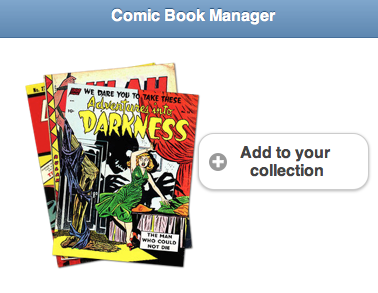

-
CRUD Apps
Comic Book Manager
The Comic Book Manager is a tool to help keep track of your comic book collection.
-
iOS & Android Native Feature Demos
Your Are Here:
-
iOS or Android Native Feature Demos
Purple denotes Android
-
Research: Week 1
1. You can access almost everything via the Javascript API provided by Phonegap. There are some limitations, for example, to doing anything "in the background". The media API does not implement the signals needed to implement playing while in another application, or for being controlled from the lock/task switching screens. (You have to extend the API with some Objective-C. It isn't hard, it's just tricky.)
2. I'll probably try to implement Geolocation and the Compass (network too). I plan on totally throwing away my previous CRUD project and starting with a fresh concept.
3. I've learned a lot of lessons over my many years of messing with these programming concepts. If possible, write tests. Correction, just plain write tests. There are lots of testing frameworks out there, just pick one and start using it. There are many forms of testing (TDD, BDD, etc.) just pick one and do it. I intend to have full unit tests for my upcoming CRUD app.
4. As of right now, I think I'll make a basic shopping list app so that my wife and I can build a shopping list as we think of things. Maybe use the geolocation to find the nearest store (great for doing things on the way home) and alerts to remind you to get things or that an item was already purchased.
5. I think I pretty much covered this in the previous question.
-
Research: Week 2
1. As far as HTML accessibility is concerned, as long as the app is within phone gap, screen readers aren't really at play here or at least are less of a concern. The biggest thing I would so is to make sure there is enough contrast between the text and the background. Also, I would make sure to avoid overly small type and use clear typography.
2. Some of the common frustrations are the lack or improper use of alt-tags for images. An alt-tag of "image" is useless for someone with a screen reader. Also, menus can be bothersome for some, especially when there are nested menus. I would use something like a screen reader, combined with something like siri, to make a digital assistant that can browse the web with you.
3. One device is the iPad. It has quite a few accessibility features, from high-contrast mode, to spoken menus. Some schools are using them to help with children that have Autism or other disabilities.
Another accessibility device is the little handicap buttons near many doors. These allow someone in a wheelchair to have a door opened for them when others are not around.
4. Apple's Siri is a big win for accessibility since it allows users to interact with the operating system with their own voice. Another application is for iOS called "Color ID Free" [http://itunes.apple.com/us/app/color-id-free/id402233600?mt=8] (even though the app isn't actually free) it can identify colors and help both the color blind, and those learning their colors.
-
Developer Information
Ryan Faerman
AVF1201